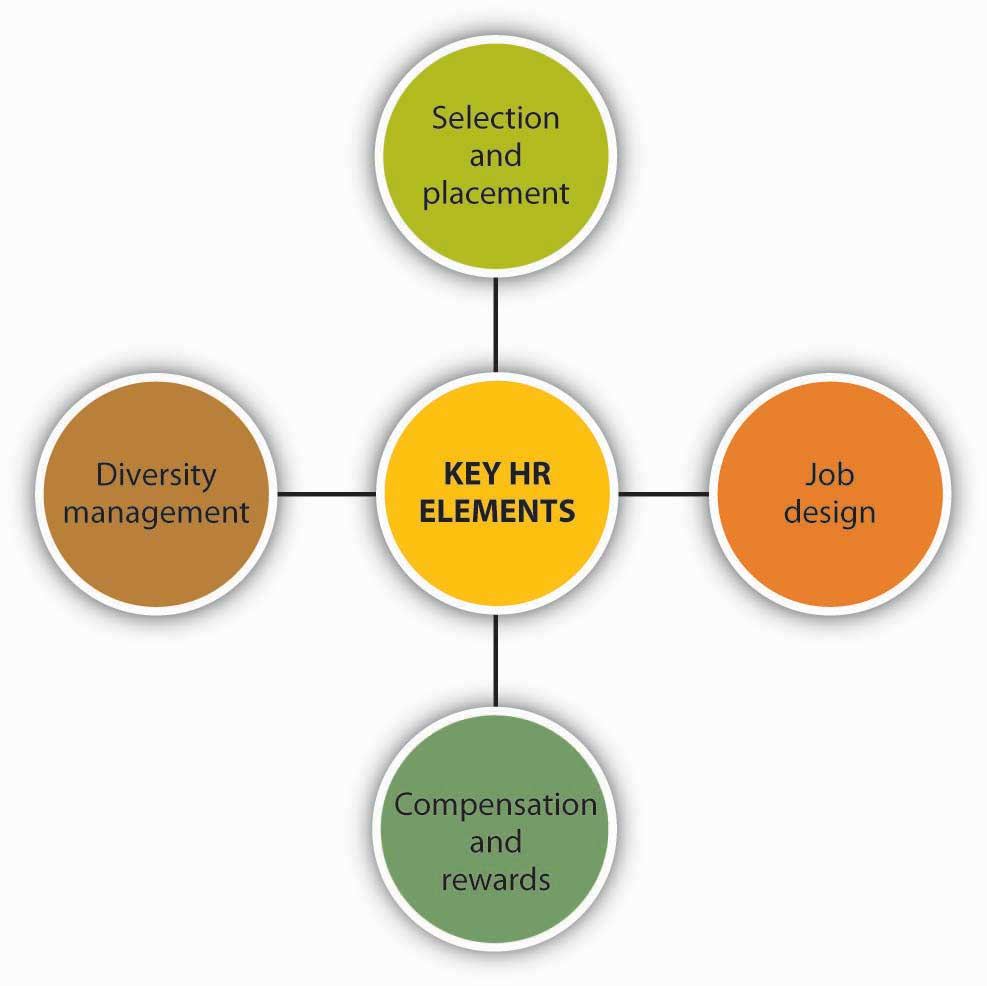
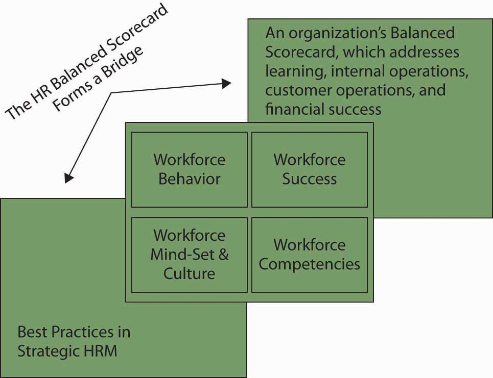

Reading this chapter will help you do the following:
You have probably heard the saying, people make the place. In today’s fast-changing environment, organizations need employees who understand the organization’s strategy and are empowered to execute it. To achieve this, organizations need to follow a strategic human resource management (SHRM) approach. SHRM ensures that people are a key factor in a firm’s competitive advantage. Thus, as summarized in the following figure, SHRM is an integral part of the control portion of the planning-organizing-leading-controlling (P-O-L-C) framework.
Figure 16.2 The P-O-L-C Framework

Organizations need human resources (HR) to be a partner in identifying, attracting, and hiring the type of employees who will be most qualified to help the company achieve its goals. SHRM requires attracting the right employees to the company, identifying metrics to help employees stay on target to meet the company’s goals, and rewarding them appropriately for their efforts so that they stay engaged and motivated. Having all these components in place—designing a high-performance work system—improves organizational performance and unleashes employee talent.
Figure 16.4
Source: Kensavage/Wikimedia Commons.
You are interviewing a candidate for a position as a cashier in a supermarket. You need someone polite, courteous, patient, and dependable. The candidate you are talking to seems nice. But how do you know who is the right person for the job? Will the job candidate like the job or get bored? Will they have a lot of accidents on the job or be fired for misconduct? Don’t you wish you knew before hiring? One company approaches this problem scientifically, saving companies time and money on hiring hourly wage employees.
Retail employers do a lot of hiring, given their growth and high turnover rate. According to one estimate, replacing an employee who leaves in retail costs companies around $4,000. High turnover also endangers customer service. Therefore, retail employers have an incentive to screen people carefully so that they hire people with the best chance of being successful and happy on the job. Unicru, an employee selection company, developed software that quickly became a market leader in screening hourly workers. The company was acquired by Massachusetts-based Kronos Inc. (NASDAQ: KRON) in 2006 and is currently owned by a private equity firm.
The idea behind the software is simple: If you have a lot of employees and keep track of your data over time, you have access to an enormous resource. By analyzing this data, you can specify the profile of the “ideal” employee. The software captures the profile of the potential high performers, and applicants are screened to assess their fit with this particular profile. More important, the profile is continually updated as studies that compare employee profiles to job performance are conducted. As the number of studies gets larger, the software does a better job of identifying the right people for the job.
If you applied for a job in retail, you may have already been a part of this database: the users of this system include giants such as Universal Studios, Costco Wholesale Corporation, Burger King, and other retailers and chain restaurants. In companies such as Albertsons or Blockbuster, applicants can either use a kiosk in the store to answer a list of questions and to enter their background, salary history, and other information or apply online from their home computers. The software screens people on basic criteria such as availability in scheduling as well as personality traits.
Candidates are asked to agree or disagree with statements such as “I often make last-minute plans” or “I work best when I am on a team.” Additionally, questions about how an applicant would react in specific job-related situations and about person-job fit are included. After the candidates complete the questions, hiring managers are sent a report complete with a color-coded suggested course of action. Red means the candidate does not fit the job, yellow indicates the hiring manager should proceed with caution, and green means the candidate is likely a good fit. Because of the use of different question formats and complex scoring methods, the company contends that faking answers to the questions of the software is not easy because it is difficult for candidates to predict the desired profile.
Matching candidates to jobs has long been viewed as a key way of ensuring high performance and low turnover in the workplace, and advances in computer technology are making it easier and more efficient to assess candidate–job fit. Companies using such technology are cutting down the time it takes to hire people, and it is estimated that using such technologies lowers their turnover by 10%–30%.
Case written by [citation redacted per publisher request]. Based on information from Berta, D. (2002, February 25). Industry increases applicant screening amid labor surplus, security concerns. Nation’s Restaurant News, 36(8), 4; Frauenheim, E. (2006, March 13). Unicru beefs up data in latest screening tool. Workforce Management, 85(5), 9–10; Frazier, M. (2005, April). Help wanted. Chain Store Age, 81(4), 37–39; Haaland, D. E. (2006, April 17). Safety first: Hire conscientious employees to cut down on costly workplace accidents. Nation’s Restaurant News, 40(16), 22–24; Overholt, A. (2002, February). True or false? You’re hiring the right people. Fast Company, 55, 108–109; Rafter, M. V. (2005, May). Unicru breaks through in the science of “smart hiring.” Workforce Management, 84(5), 76–78.
The role of HR is changing. Previously considered a support function, HR is now becoming a strategic partner in helping a company achieve its goals. A strategic approach to HR means going beyond the administrative tasks like payroll processing. Instead, managers need to think more broadly and deeply about how employees will contribute to the company’s success.
Strategic human resource management (SHRM)An organizational level approach to human resources management with a concern for the effects of HRM practices on firm performance. is not just a function of the HR department—all managers and executives need to be involved because the role of people is so vital to a company’s competitive advantage.Becker, B. E., & Huselid, M. A. (2006). Strategic human resources management: Where do we go from here? Journal of Management, 32(6): 898–925. In addition, organizations that value their employees are more profitable than those that do not.Huselid, M. A. (1995). The impact of human resource management practices on turnover, productivity, and corporate financial performance. Academy of Management Journal, 38, 635–672; Pfeffer, J. (1998). The human equation: Building profits by putting people first. Boston: Harvard Business School Press; Pfeffer, J., & Veiga, J. F. (1999). Putting people first for organizational success. Academy of Management Executive, 13, 37–48; Welbourne, T., & Andrews, A. (1996). Predicting performance of initial public offering firms: Should HRM be in the equation? Academy of Management Journal, 39, 910–911. Research shows that successful organizations have several things in common, such as providing employment security, engaging in selective hiring, using self-managed teams, being decentralized, paying well, training employees, reducing status differences, and sharing information.Pfeffer, J., & Veiga, J. F. 1999. Putting people first for organizational success. Academy of Management Executive, 13, 37–48. When organizations enable, develop, and motivate human capital, they improve accounting profits as well as shareholder value in the process.Brian E., Becker, B. E., Huselid, M. A., & Ulrich, D. (2002). Six key principles for measuring human capital performance in your organization. University of Maryland Working Paper. The most successful organizations manage HR as a strategic asset and measure HR performance in terms of its strategic impact.
Here are some questions that HR should be prepared to answer in this new world.Ulrich, D. (1998). Delivering results. Boston: Harvard Business School Press.
Employees provide an organization’s human capitalThe collective sum of the attributes, life experience, knowledge, inventiveness, energy, and enthusiasm that its people choose to invest in their work.. Your human capital is the set of skills that you have acquired on the job, through training and experience, and which increase your value in the marketplace. The Society of Human Resource Management’s Research Quarterly defined an organization’s human capital as follows: “A company’s human capital asset is the collective sum of the attributes, life experience, knowledge, inventiveness, energy and enthusiasm that its people choose to invest in their work.”Weatherly, L. (2003, March). Human capital—the elusive asset; measuring and managing human capital: A strategic imperative for HR. Research Quarterly, Society for Human Resource Management. Retrieved June 1, 2003, from http://www.shrm.org/research/quarterly/0301capital.pdf.
Unfortunately, many HR managers are more effective in the technical or operational aspects of HR than they are in the strategic, even though the strategic aspects have a much larger effect on the company’s success.Huselid, M. A., Jackson, S. E., & Schuler, R. S. (1997). Technical and strategic human resource management effectiveness as determinants of firm performance. Academy of Management Journal, 40(1), 171–188. In the past, HR professionals focused on compliance to rules, such as those set by the federal government, and they tracked simple metrics like the number of employees hired or the number of hours of training delivered. The new principles of management, however, require a focus on outcomes and results, not just numbers and compliance. Just as lawyers count how many cases they’ve won—not just how many words they used—so, too must HR professionals track how employees are using the skills they’ve learned to attain goals, not just how many hours they’ve spent in training.Ulrich, D. (1998.) Delivering results. Boston: Harvard Business School Press.
John Murabito, executive vice president and head of HR and Services at Cigna, says that HR executives need to understand the company’s goals and strategy and then provide employees with the skills needed. Too often, HR execs get wrapped up in their own initiatives without understanding how their role contributes to the business. That is dangerous, because when it comes to the HR department, “anything that is administrative or transactional is going to get outsourced,” Murabito says. Marquez, J. (2007, September 10). On the front line: A quintet of 2006’s highest-paid HR leaders discuss how they are confronting myriad talent management challenges as well as obstacles to being viewed by their organizations as strategic business partners. Workforce Management, 86(5), 22. Indeed, the number of HR outsourcing contracts over $25 million has been increasing, with 2,708 active contracts under way in 2007.TPI Counts 2700+ Outsourcing Contracts. (2007, December). Retrieved January 30, 2009, from http://www.sharedxpertise.org/file/230/trends--research.html. For example, the Bank of America outsourced its HR administration to Arinso. Arinso will provide timekeeping, payroll processing, and payroll services for 10,000 Bank of America employees outside the U.S.HRO Europe, August 23, 2006. Retrieved January 30, 2009, from http://www.hroeurope.com. To avoid outsourcing, HR needs to stay relevant and accept accountability for its business results. In short, the people strategy needs to be fully aligned with the company’s business strategy and keep the focus on outcomes.
Beyond the basic need for compliance with HR rules and regulations, the four key elements of HR are summarized in the following figure. In high-performing companies, each element of the HR system is designed to reflect best practice and to maximize employee performance. The different parts of the HR system are strongly aligned with company goals.
Figure 16.5 Key HR Elements
When hiring, acquaint prospective new hires with the nature of the jobs they will be expected to fulfill. This includes explaining the technical competencies needed (for example, collecting statistical data) and defining behavioral competencies. Behavioral competencies may have a customer focus, such as the ability to show empathy and support of customers’ feelings and points of view, or a work management focus, such as the ability to complete tasks efficiently or to know when to seek guidance.
In addition, make the organization’s culture clear by discussing the values that underpin the organization—describe your organization’s “heroes.” For example, are the heroes of your company the people who go the extra mile to get customers to smile? Are they the people who toil through the night to develop new code? Are they the ones who can network and reach a company president to make the sale? By sharing such stories of company heroes with your potential hires, you’ll help reinforce what makes your company unique. This, in turn, will help the job candidates determine whether they’ll fit into your organization’s culture.
Design jobs that involve doing a whole piece of work and are challenging but doable. Job designThe process of putting together various elements to form a job, bearing in mind organizational and individual worker requirements. refers to the process of putting together various elements to form a job, bearing in mind organizational and individual worker requirements, as well as considerations of health, safety, and ergonomics. Train employees to have the knowledge and skills to perform all parts of their job and give them the authority and accountability to do so.Lawler, E. (1992). The ultimate advantage. San Francisco: Jossey-Bass. Job enrichment is important for retaining your employees.
One company that does training right is Motorola. As a global company, Motorola operates in many countries, including China. Operating in China presents particular challenges in terms of finding and hiring skilled employees. In a recent survey conducted by the American Chamber of Commerce in Shanghai, 37% of U.S.-owned enterprises operating in China said that recruiting skilled employees was their biggest operational problem.Lane K., & Pollner, F. (2008, August 15). How to address China’s growing talent shortage. McKinsey Quarterly, 17–25. Indeed, more companies cited HR as a problem than cited regulatory concerns, bureaucracy, or infringement on intellectual property rights. The reason is that Chinese universities do not turn out candidates with the skills that multinational companies need. As a result, Motorola has created its own training and development programs to bridge the gap. For example, Motorola’s China Accelerated Management Program is designed for local managers. Another program, Motorola’s Management Foundation program, helps train managers in areas such as communication and problem solving. Finally, Motorola offers a high-tech MBA program in partnership with Arizona State University and Tsinghua University so that top employees can earn an MBA in-house.Lane K., & Pollner, F. (2008, August 15). How to address China’s growing talent shortage. McKinsey Quarterly, 36–41. Such programs are tailor-made to the low-skilled but highly motivated Chinese employees.
Evaluate and pay people based on their performance, not simply for showing up on the job. Offer rewards for skill development and organizational performance, emphasizing teamwork, collaboration, and responsibility for performance. Help employees identify new skills to develop so that they can advance and achieve higher pay and rewards. Compensation systems that include incentives, gainsharing, profit-sharing, and skill-based pay reward employees who learn new skills and put those skills to work for the organization. Employees who are trained in a broad range of skills and problem solving are more likely to grow on the job and feel more satisfaction. Their training enables them to make more valuable contributions to the company, which, in turn, gains them higher rewards and greater commitment to the company.Barnes, W. F. (2001). The challenge of implementing and sustaining high performance work systems in the United States: An evolutionary analysis of I/N Tek and Kote. PhD dissertation, University of Notre Dame. The company likewise benefits from employees’ increased flexibility, productivity, and commitment.
When employees have access to information and the authority to act on that information, they’re more involved in their jobs and more likely to make the right decision and take the necessary actions to further the organization’s goals. Similarly, rewards need to be linked to performance, so that employees are naturally inclined to pursue outcomes that will gain them rewards and further the organization’s success at the same time.
Another key to successful SHRM in today’s business environment is embracing diversity. In past decades, “diversity” meant avoiding discrimination against women and minorities in hiring. Today, diversity goes far beyond this limited definition; diversity management involves actively appreciating and using the differing perspectives and ideas that individuals bring to the workplace. Diversity is an invaluable contributor to innovation and problem-solving success. As James Surowiecki shows in The Wisdom of Crowds, the more diverse the group in terms of expertise, gender, age, and background, the more ability the group has to avoid the problems of groupthink.Surowiecki. J. (2005). The wisdom of crowds. New York: Anchor Books. Diversity helps company teams to come up with more creative and effective solutions. Teams whose members have complementary skills are often more successful because members can see one another’s blind spots. Members will be more inclined to make different kinds of mistakes, which means that they’ll be able to catch and correct those mistakes.
Human resources management is becoming increasingly important in organizations because today’s knowledge economy requires employees to contribute ideas and be engaged in executing the company’s strategy. HR is thus becoming a strategic partner by identifying the skills that employees need and then providing employees with the training and structures needed to develop and deploy those competencies. All the elements of HR—selection, placement, job design, and compensation—need to be aligned with the company’s strategy so that the right employees are hired for the right jobs and rewarded properly for their contributions to furthering the company’s goals.
You have likely heard the term, the war for talentCompetition between organizations to attract and retain the most able employees., which reflects competition among organizations to attract and retain the most able employees. Agencies that track demographic trends have been warning for years that the U.S. workforce will shrink in the second and third decades of the 21st century as the baby boom generation (born 1945–1961) reaches retirement age. According to one source, there will be 11.5 million more jobs than workers in the United States by 2010.Extreme talent shortage makes competition fierce for key jobs and highlights needs for leadership development. (2007, November 26). Business Wire, 27. Even though many boomers say they want to (or have to) continue working past the traditional age of retirement, those who do retire or who leave decades-long careers to pursue “something I’ve always wanted to do” will leave employers scrambling to replace well-trained, experienced workers. As workers compete for the most desirable jobs, employers will have to compete even more fiercely to find the right talent.
Peter Cappelli of the Wharton SchoolCappelli, P. (2008, March). Talent management for the 21st century, Boston. Harvard Business Review, 17–36. defines talent managementAnticipating the need for human capital and setting a plan to meet it. as anticipating the need for human capital and setting a plan to meet it. It goes hand in hand with succession planningA process whereby an organization ensures that employees are recruited and developed to fill each key role within the company., the process whereby an organization ensures that employees are recruited and developed to fill each key role within the company. Most companies, unfortunately, do not plan ahead for the talent they need, which means that they face shortages of critical skills at some times and surpluses at other times. Other companies use outdated methods of succession planning that don’t accurately forecast the skills they’ll need in the future.
Interestingly, however, techniques that were developed to achieve productivity breakthroughs in manufacturing can be applied to talent management. For example, it is expensive to develop all talent internally; training people takes a long time and requires accurate predictions about which skill will be needed. Such predictions are increasingly difficult to make in our uncertain world. Therefore, rather than developing everyone internally, companies can hire from the outside when they need to tap specific skills. In manufacturing, this principle is known as “make or buy.” In HR, the solution is to make and buy; that is, to train some people and to hire others from the external marketplace. In this case, “making” an employee means hiring a person who doesn’t yet have all the needed skills to fulfill the role, but who can be trained (“made”) to develop them. The key to a successful “make” decision is to distinguish between the high-potential employees who don’t yet have the skills but who can learn them from the mediocre employees who merely lack the skills. The “buy” decision means hiring an employee who has all the necessary skills and experience to fulfill the role from day one. The “buy” decision is useful when it’s too difficult to predict exactly which skills will be needed in the future.Buhler, Patricia M. (2008, March). Managing in the new millennium; succession planning: Not just for the c suite. Supervision, 69(3), 19-23.
Another principle from manufacturing that works well in talent management is to run smaller batch sizes. That is, rather than sending employees to 3-year-long training programs, send them to shorter programs more frequently. With this approach, managers don’t have to make the training decision so far in advance. They can wait to decide exactly which skills employees will learn closer to the time the skill is needed, thus ensuring that employees are trained on the skills they’ll actually use.
Winning the war for talent means more than simply attracting workers to your company. It means attracting the right workers—the ones who will be enthusiastic about their work. Enthusiasm for the job requires more than having a good attitude about receiving good pay and benefits—it means that an employee’s goals and aspirations also match those of the company. Therefore, it’s important to identify employees’ preferences and mutually assess how well they align with the company’s strategy. To do this, the organization must first be clear about the type of employee it wants. Companies already do this with customers: marketing executives identify specific segments of the universe of buyers to target for selling products. Red Bull, for example, targets college-age consumers, whereas SlimFast goes for adults of all ages who are overweight. Both companies are selling beverages but to completely different consumer segments. Similarly, companies need to develop a profile of the type of workers they want to attract. Do you want entrepreneurial types who seek autonomy and continual learning, or do you want team players who enjoy collaboration, stability, and structure? Neither employee type is inherently “better” than another, but an employee who craves autonomy may feel constrained within the very same structure in which a team player would thrive.
Earlier, we said that it was important to “mutually assess” how well employees’ preferences aligned with the company’s strategy. One-half of “mutual” refers to the company, but the other half refers to the job candidates. They also need to know whether they’ll fit well into the company. One way to help prospective hires make this determination is to describe to them the “signature experience” that sets your company apart. As Tamara Erickson and Lynda Gratton define it, your company’s signature experience is the distinctive practice that shows what it’s really like to work at your company.Erickson, T., & Gratton, L. (2007, March). What it means to work here. Harvard Business Review, 23–29.
For example, here are the signature experiences of two companies, Whole Foods and Goldman Sachs: At Whole Foods, team-based hiring is a signature experience—employees in each department vote on whether a new employee will be retained after a 4-week trial period. This demonstrates to potential hires that Whole Foods is all about collaboration. In contrast, Goldman Sachs’s signature experience is multiple one-on-one interviews. The story often told to prospective hires is of the MBA student who went through 60 interviews before being hired. This story signals to new hires that they need to be comfortable meeting endless new people and building networks across the company. Those who enjoy meeting and being interviewed by so many diverse people are exactly the ones who will fit into Goldman’s culture.
The added benefit of hiring workers who match your organizational culture and are engaged in their work is that they will be less likely to leave your company just to get a higher salary.
The war for talent stems from the approaching shortage of workers. As we mentioned earlier in this chapter, the millions of baby boomers reaching retirement age are leaving a gaping hole in the U.S. workforce. What’s more, workers are job-hopping more frequently than in the past. According to the U.S. Bureau of Labor Statistics, the average job tenure has dropped from 15 years in 1980 to 4 years in 2007. As a manager, therefore, you need to give your employees reasons to stay with your company. One way to do that is to spend time talking with employees about their career goals. Listen to their likes and dislikes so that you can help them use the skills they like using or develop new ones they wish to acquire.Kaye, B. (2008). Love ’em or lose ’em. San Francisco: Barrett-Koehler.
Don’t be afraid to “grow” your employees. Some managers want to keep their employees in their department. They fear that helping employees grow on the job will mean that employees will outgrow their job and leave it.Field, A. (2008, June). Do your stars see a reason to stay? Harvard Management Update,. But, keeping your employees down is a sure way to lose them. What’s more, if you help your employees advance, it’ll be easier for you to move up because your employees will be better able to take on the role you leave behind.
In some cases, your employees may not be sure what career path they want. As a manager, you can help them identify their goals by asking questions such as:
Employees want to grow and develop, stretching their capabilities. They want projects that engage their heads as well as their hearts, and they want to connect with the people and things that will help them achieve their professional goals.Deloitte Research. (2007). It’s Do you know where your talent is? why acquisition and retention strategies don’t work. Geneva, Switzerland: Deloitte-Touch Research Report. Here are two ways to provide this to your employees: First, connect people with mentors and help them build their networks. Research suggests that successful managers dedicate 70% more time to networking activities and 10% more time to communication than their less successful counterparts.Luthans, F., Yodgetts, R., & Rosenkrantz, S. (1988). Real managers. Cambridge: Ballinger. What makes networks special? Through networks, people energize one another, learn, create, and find new opportunities for growth. Second, help connect people with a sense of purpose. Focusing on the need for purpose is especially important for younger workers, who rank meaningful work and challenging experiences at the top of their job search lists.Sheahan, P. (2006). Generation Y: Thriving (and surviving) with generation Y at work. Victoria, Australia: Hardie Grant Books.
Global consulting firm McKinsey & Company conducted a study to identify a possible link between a company’s financial performance and its success in managing talent. The survey results, reported in May 2008, show that there was indeed a relationship between a firm’s financial performance and its global talent management practices. Three talent management practices in particular correlated highly with exceptional financial performance:
The McKinsey survey found that companies achieving scores in the top third in any of these three areas had a 70% chance of achieving financial performance in the top third of all companies.Guthridge, M., & Komm, A. B. (1988, May). Why multinationals struggle to manage talent. McKinsey Quarterly, 19–25.
Let’s take a closer look at what each of these three best practices entail. First, having consistent talent evaluation means that employees around the world are evaluated on the same standards. This is important because it means that if an employee from one country transfers to another, his or her manager can be assured that the employee has been held to the same level of skills and standards. Second, having cultural diversity means having employees who learn something about the culture of different countries, not just acquire language skills. This helps bring about open-mindedness across cultures. Finally, developing global leaders means rotating employees across different cultures and giving them international experience. Companies who do this best also have policies of giving managers incentives to share their employees with other units.
The coming shortage of workers makes it imperative for managers to find, hire, retain, and develop their employees. Managers first need to define the skills that the company will need for the future. Then, they can “make or buy”—that is, train or hire—employees with the needed skills. Retaining these employees requires engaging them on the job. Good talent management practices translate to improved financial performance for the company as a whole.
Selecting the right employees and placing them in the right positions within the company is a key HR function and is vital to a company’s success. Companies should devote as much care and attention to this “soft” issue as they do to financial planning because errors will have financial impact and adverse effects on a company’s strategy.
Walt has a problem. He works as a manager in a medium-sized company and considers himself fortunate that the organizational chart allows him a full-time administrative assistant (AA). However, in the two years Walt has been in his job, five people have held this AA job. The most recent AA, who resigned after four weeks, told Walt that she had not known what the job would involve. “I don’t do numbers, I’m not an accountant,” she said. “If you want someone to add up figures and do calculations all day, you should say so in the job description. Besides, I didn’t realize how long and stressful my commute would be—the traffic between here and my house is murder!”
Taken aback, Walt contacted the company’s HR department to clarify the job description for the AA position. What he learned was that the description made available to applicants was, indeed, inadequate in a number of ways. Chances are that frequent turnover in this AA position is draining Walt’s company of resources that could be used for much more constructive purposes.
An accurate and complete job description is a powerful SHRM tool that costs little to produce and can save a bundle in reduced turnover. While the realistic description may discourage some applicants (for example, those who lack an affinity for calculations might not bother to apply for Walt’s AA position), those who follow through with the application process are much more likely to be satisfied with the job once hired. In addition to summarizing what the worker will actually be doing all day, here are some additional suggestions for writing an effective job description:
Managers who hire well don’t just hire for skills or academic background; they ask about the potential employee’s philosophy on life or how the candidate likes to spend free time. These questions help the manager assess whether the cultural fit is right. A company in which all work is done in teams needs team players, not just “A” students. Ask questions like, “Do you have a personal mission statement? If not, what would it be if you wrote one today?”Pfeffer, J. (1998). The human equation. Boston: Harvard Business School Press. to identify potential hires’ preferences.
At Google, for example, job candidates are asked questions like, “If you could change the world using Google’s resources, what would you build?”Slater, C. (2008, March). The faces and voices of Google. Fast Company, 37–45. Google wants employees who will think and act on a grand scale, employees who will take on the challenges of their jobs, whatever their job may be. Take Josef DeSimone, who’s Google’s executive chef. DeSimone, who’s worked everywhere from family-style restaurants to Michelin-caliber ones, was amazed to learn that Google had 17 cafes for its employees. “Nobody changes the menu daily on this scale,” he says. “It’s unheard of.” When he was hired, DeSimone realized, “Wow, you hire a guy who’s an expert in food and let him run with it! You don’t get in his way or micromanage.”Slater, C. (2008, March). Josef DeSimone—executive chef. Fast Company, 46–48. Google applies this approach to all positions and lets employees run with the challenge.
Traditionally, companies have built a competitive advantage by focusing on what they have—structural advantages such as economies of scale, a well-established brand, or dominance in certain market segments. Companies such as Southwest Airlines, by contrast, see its people as their advantage: “Our fares can be matched; our airplanes and routes can be copied. But we pride ourselves on our customer service,” said Sherry Phelps, director of corporate employment. That’s why Southwest looks for candidates who generate enthusiasm and leans toward extraverted personalities.Bruce, A. (1997, March). Southwest: Back to the FUNdamentals. HR Focus, 74(3), 11; Freiberg, K., & Freiberg, J. (2003). Nuts! Southwest Airlines’s crazy recipe for business and personal success. Austin, TX: Bard; Hallowell, R. (1996, Winter). Southwest Airlines: A case study linking employee needs satisfaction and organizational capabilities to competitive advantage. Human Resource Management, 35(4), 513–529; Heskett J. L., & Hallowell, R. (1993). Southwest Airlines—1993 (A). Harvard Business School Case; Southwest Airlines’ Herb Kelleher: Unorthodoxy at work. (1995, January). Management Review, 2–9; LaBarre, P. (1996, February 5). Lighten up! Blurring the line between fun and work not only humanizes organizations but strengthens the bottom line. Industry Week, 245(3), 53–67; Labich, K. (1994, May 2). Is Herb Kelleher America’s best CEO? Fortune, 44–45; and McNerney, D. J. (1996 August). Employee motivation: creating a motivated workforce. HR Focus, 73(8), 1; Tomkins, R. (1996, November 11). HR: The seriously funny airline. Financial Times (33137), 14, A1–A5. Southwest hires for attitude. Flight attendants have been known to sing the safety instructions, and pilots tell jokes over the public address system.
Southwest Airlines makes clear right from the start the kind of people it wants to hire. For example, recruitment ads showed Southwest founder Herb Kelleher dressed as Elvis and read: “Work in a Place Where Elvis Has Been Spotted…The qualifications? It helps to be outgoing. Maybe even a bit off-center. And be prepared to stay awhile. After all, we have the lowest employee turnover rate in the industry.” People may scoff or question why Southwest indulges in such showy activities or wonder how an airline can treat its jobs so lightly. Phelps answers, “We do take our work seriously. It’s ourselves that we don’t.” People who don’t have a humane, can-do attitude are fired. Southwest has a probationary period during which it determines the compatibility of new hires with the culture. People may be excellent performers, but if they don’t match the culture, they are let go. As Southwest’s founder Kelleher once said, “People will write me and complain, ‘Hey, I got terminated or put on probation for purely subjective reasons.’ And I’ll say, ‘Right! Those are the important reasons.’”
In many states, employees are covered under what is known as the at-will employment doctrineA doctrine of American law that defines an employment relationship in which either party can break the relationship with no liability, provided there was no express contract for a definite term governing the employment relationship and that the employer does not belong to a collective bargaining unit (i.e., a union).. At-will employment is a doctrine of American law that defines an employment relationship in which either party can break the relationship with no liability, provided there was no express contract for a definite term governing the employment relationship and that the employer does not belong to a collective bargaining unit (i.e., a union).Rothstein, M. A., Knapp, Andria S., & Liebman, Lance. (1987). Cases and materials on employment law (p. 738). New York: Foundation Press. However, there are legal restrictions on how purely subjective the reasons for firing can be. For instance, if the organization has written hiring and firing procedures and does not follow them in selective cases, then those cases might give rise to claims of wrongful termination. Similarly, in situations where termination is clearly systematic, for example, based on age, race, religion, and so on, wrongful termination can be claimed.
To make good selection and placement decisions, you need information about the job candidate. Two time-tested methods to get that information are testing and interviewing.
A detailed interview begins by asking the candidate to describe his work history and then getting as much background on his most recent position (or the position most similar the open position). Ask about the candidate’s responsibilities and major accomplishments. Then, ask in-depth questions about specific job situations. Called situational interviewsA job interview where candidates are asked in-depth questions about specific job situations in the past or future., these types of interviews can focus on past experience or future situations. For example, experienced-based questions are “Tell me about a major initiative you developed and the steps you used to get it adopted.” Or, “Describe a problem you had with someone and how you handled it.” In contrast, future-oriented situation interview questions ask candidates to describe how they would handle a future hypothetical situation, such as: “Suppose you came up with a faster way to do a task, but your team was reluctant to make the change. What would you do in that situation?”
In addition to what is asked, it is also important that interviewers understand what they should not ask, largely because certain questions lead to answers that may be used to discriminate. There are five particularly sensitive areas. First, the only times you can ask about age are when it is a requirement of a job duty or you need to determine whether a work permit is required. Second, it is rarely appropriate or legal to ask questions regarding race, color, national origin, or gender. Third, although candidates may volunteer religious or sexually-orientated information in an interview, you still need to be careful not to discriminate. Ask questions that are relevant to work experience or qualifications. Fourth, firms cannot discriminate for health or disabilities; you may not ask about smoking, health-related questions, or disabilities in an interview. Finally, you may not ask questions about marital status, children, personal life, pregnancy, or arrest record. These kinds of questions could be tempting to ask if you are interviewing for a position requiring travel; however, you can only explain the travel requirements and confirm that the requirements are acceptable.
In addition to interviews, many employers use testing to select and place job applicants. Any tests given to candidates must be job related and follow guidelines set forth by the Equal Opportunity Employment Commission to be legal. For the tests to be effective, they should be developed by reputable psychologists and administered by professionally qualified personnel who have had training in occupations testing in an industrial setting. The rationale behind testing is to give the employer more information before making the selection and placement decision—information vital to assessing how well a candidate is suited to a particular job. Most preemployment assessment tests measure thinking styles, behavioral traits, and occupational interests. The results are available almost immediately after a candidate completes the roughly hour-long questionnaire. Thinking styles tests can tell the potential employer how fast someone can learn new things or how well he or she can verbally communicate. Behavioral traits assessments measure energy level, assertiveness, sociability, manageability, and attitude. For example, a high sociability score would be a desirable trait for salespeople.Mrosko, T. (2006, August). The personnel puzzle: Preemployment testing can help your bottom line. Inside Business, 8(8), 60–73.
In our increasingly global economy, managers need to decide between using expatriates or hiring locals when staffing international locations. On the surface, this seems a simple choice between the firm-specific expertise of the expatriate and the cultural knowledge of the local hire. In reality, companies often fail to consider the high probability and high cost of expatriates failing to adapt and perform in their international assignments.
For example, cultural issues can easily create misunderstandings between expatriate managers and employees, suppliers, customers, and local government officials. At an estimated cost of $200,000 per failed expatriate, international assignment decisions are often made too lightly in many companies. The challenge is to overcome the natural tendency to hire a well-known, corporate insider over an unknown local at the international site. Here are some indications to use to determine whether an expatriate or a local hire would be best.
Managers may want to choose an expatriate when:
Managers may want to staff the position with a local hire when:
Effective selection and placement means finding and hiring the right employees for your organization and then putting them into the jobs for which they are best suited. Providing an accurate and complete job description is a key step in the selection process. An important determination is whether the candidate’s personality is a good fit for the company’s culture. Interviewing is a common selection method. Situational interviews ask candidates to describe how they handled specific situations in the past (experience-based situational interviews) and how they would handle hypothetical questions in the future (future-oriented situational interviews.) Other selection tools include cognitive tests, personality inventories, and behavioral traits assessments. Specific personalities may be best suited for positions that require sales, teamwork, or entrepreneurship, respectively. In our increasingly global economy, managers need to decide between using expatriates or hiring locals when staffing international locations.
Pay can be thought of in terms of the “total reward” that includes an individual’s base salary, variable pay, share ownership, and other benefits. A bonusA form of variable pay where the employee earns additional compensation based on achieved objectives., for example, is a form of variable play. A bonus is a one-time cash payment, often awarded for exceptional performance. Providing employees with an annual statement of all these benefits they receive can help them understand the full value of what they are getting.Anderson, I. (2007, August 1). Human resources: War or revolution? Mondaq Business Briefing, p. n.a.
As summarized in the following table, pay can take the form of direct or indirect compensation. Nonmonetary pay can include any benefit an employee receives from an employer or job that does not involve tangible value. This includes career and social rewards, such as job security, flexible hours and opportunity for growth, praise and recognition, task enjoyment, and friendships. Direct pay is an employee’s base wage. It can be an annual salary, hourly wage, or any performance-based pay that an employee receives, such as profit-sharing bonuses.
Table 16.1 Elements of a Pay System
| Nonmonetary pay | Includes benefits that do not involve tangible value. |
| Direct pay | Employee’s base wage |
| Indirect pay | Everything from legally required programs to health insurance, retirement, housing, etc. |
| Basic pay | Cash wage paid to the employee. Because paying a wage is a standard practice, the competitive advantage can only come by paying a higher amount. |
| Incentive pay | A bonus paid when specified performance objectives are met. May inspire employees to set and achieve a higher performance level and is an excellent motivator to accomplish goals. |
| Stock options | A right to buy a piece of the business that may be given to an employee to reward excellent service. An employee who owns a share of the business is far more likely to go the extra mile for the operation. |
| Bonuses | A gift given occasionally to reward exceptional performance or for special occasions. Bonuses can show an employer appreciates his or her employees and ensures that good performance or special events are rewarded. |
Indirect compensation is far more varied, including everything from legally required public protection programs such as social security to health insurance, retirement programs, paid leave, child care, or housing. Some indirect compensation elements are required by law: social security, unemployment, and disability payments. Other indirect elements are up to the employer and can offer excellent ways to provide benefits to the employees and the employer as well. For example, a working parent may take a lower-paying job with flexible hours that will allow him or her to be home when the children get home from school. A recent graduate may be looking for stable work and an affordable place to live. Both of these individuals have different needs and, therefore, would appreciate different compensation elements.
When setting pay levels for positions, managers should make sure that the pay level is fair relative to what other employees in the position are being paid. Part of the pay level is determined by the pay level at other companies. If your company pays substantially less than others, it’s going to be the last choice of employment unless it offers something overwhelmingly positive to offset the low pay, such as flexible hours or a fun, congenial work atmosphere. Besides these external factors, companies conduct a job evaluationAn evaluation of the positions in an organization to understand job design requirements and identify positions critical to strategy and firm performance. to determine the internal value of the job—the more vital the job to the company’s success, the higher the pay level. Jobs are often ranked alphabetically—“A” positions are those on which the company’s value depends, “B” positions are somewhat less important in that they don’t deliver as much upside to the company, and “C” positions are those of least importance—in some cases, these are outsourced.
The most vital jobs to one company’s success may not be the same as in other companies. For example, information technology companies may put top priority on their software developers and programmers, whereas for retailers such as Nordstrom, the “A” positions are those frontline employees who provide personalized service. For an airline, pilots would be a “B” job because, although they need to be well trained, investing further in their training is unlikely to increase the airline’s profits. “C” positions for a retailer might include back office bill processing, while an information technology company might classify customer service as a “C” job.
When setting reward systems, it’s important to pay for what the company actually hopes to achieve. Steve Kerr, vice president of corporate management at General Electric, talks about the common mistakes that companies make with their reward systems, such as saying they value teamwork but only rewarding individual effort. Similarly, companies say they want innovative thinking or risk taking, but they reward people who “make the numbers.”Kerr, S. (1995). On the folly of rewarding for A, while hoping for B. Academy of Management Executive, 9(1), 25–37. If companies truly want to achieve what they hope for, they need payment systems aligned with their goals. For example, if retention of star employees is important to your company, reward managers who retain top talent. At Pepsico, for instance, one-third of a manager’s bonus is tied directly to how well the manager did at developing and retaining employees. Tying compensation to retention makes managers accountable.Field, A. (2008, June). Do your starts see a reason to stay? Harvard Management Update, 5–6.
As its name implies, pay for performanceWhen pay is tied directly to an individual’s performance in meeting specific business goals or objectives. ties pay directly to an individual’s performance in meeting specific business goals or objectives. Managers (often together with the employees themselves) design performance targets to which the employee will be held accountable. The targets have accompanying metrics that enable employees and managers to track performance. The metrics can be financial indicators, or they can be indirect indicators such as customer satisfaction or speed of development. Pay-for-performance schemes often combine a fixed base salary with a variable pay component (such as bonuses or stock options) that vary with the individual’s performance.
In addition to regular pay structures and systems, companies often create special programs that reward exceptional employee performance. For example, the financial software company Intuit, Inc., instituted a program called Spotlight. The purpose of Spotlight is to “spotlight performance, innovation and service dedication.”Hoyt, David. (2008, March). Employee recognition at Intuit; and Spotlight. Global Strategic Recognition Program. Stanford Graduate School of Business Case Study. Retrieved January 30, 2009, from http://www.globoforce.com/corporate/eng/our-customers/case-studies/intuit.html?KeepThis=true&TB_iframe=true&height=400&width=600 Unlike regular salaries or year-end bonuses, spotlight awards can be given on the spot for specific behavior that meets the reward criteria, such as filing a patent, inventing a new product, or meeting a milestone for years of service. Rewards can be cash awards of $500 to $3,000 and can be made by managers without high-level approval. In addition to cash and noncash awards, two Intuit awards feature a trip with $500 in spending money.Intuit spotlights strategic importance of global employee recognition. (2008, August 15). Retrieved January 30, 2009, from http://howtomanagehumanresources.blogspot.com/2008/08/intuit-spotlights-strategic-importance.html.
So far, we have discussed pay in terms of individual compensation, but many employers also use compensation systems that reward all of the organization’s employees as a group or various groups and teams within the organization. Let’s examine some of these less traditional pay structures.
Sometimes called profit sharing, gainsharingWhen an organization shares the financial gains with employees, such that employees receive a portion of the profit achieved from their efforts. (Sometimes called profit sharing.) is a form of pay for performance. In gainsharing, the organization shares the financial gains with employees. Employees receive a portion of the profit achieved from their efforts. How much they receive is determined by their performance against the plan. Here’s how gainsharing works: First, the organization must measure the historical (baseline) performance. Then, if employees help improve the organization’s performance on those measures, they share in the financial rewards achieved. This sharing is typically determined by a formula.
The effectiveness of a gainsharing plan depends on employees seeing a relationship between what they do and how well the organization performs. The larger the size of the organization, the harder it is for employees to see the effect of their work. Therefore, gainsharing plans are more effective in companies with fewer than 1,000 people.Lawler, E. (1992). The ultimate advantage. San Francisco: Jossey-Bass. Gainsharing success also requires the company to have good performance metrics in place so that employees can track their process. The gainsharing plan can only be successful if employees believe and see that if they perform better, they will be paid more. The pay should be given as soon as possible after the performance so that the tie between the two is established.
When designing systems to measure performance, realize that performance appraisals need to focus on quantifiable measures. Designing these measures with input from the employees helps make the measures clear and understandable to employees and increases their buy-in that the measures are reasonable.
Many managers seek to build teams, but face the question of how to motivate all the members to achieve the team’s goals. As a result, team-based pay is becoming increasingly accepted. In 1992, only 3% of companies had team-based pay. By 1996, 9% did, and another 39% were planning such systems.Flannery, T. (1996). People, performance, and pay (p. 117). New York: Free Press. With increasing acceptance and adoption come different choices and options of how to structure team-based pay. One way to structure the pay is to first identify the type of team you have—parallel, work, project, or partnership—and then choose the pay option that is most appropriate to that team type. Let’s look at each team type in turn and the pay structures best suited for each.
Parallel teams are teams that exist alongside (parallel to) an individual’s daily job. For example, a person may be working in the accounting department but also be asked to join a team on productivity. Parallel teams are often interdepartmental, meet part time, and are formed to deal with a specific issue. The reward for performance on this team would typically be a merit increase or a recognition award (cash or noncash) for performance on the team.
A project team is likewise a temporary team, but it meets full time for the life of the project. For example, a team may be formed to develop a new project and then disband when the new product is completed. The pay schemes appropriate for this type of team include profit sharing, recognition rewards, and stock options. Team members evaluate each other’s performance.
A partnership team is formed around a joint venture or strategic alliance. Here, profit sharing in the venture is the most common pay structure. Finally, with the work team, all individuals work together daily to accomplish their jobs. Here, skill-based pay and gainsharing are the payment schemes of choice, with team members evaluating one another’s performance.
There are two main theories of how to reward employees. Nancy KatzKatz, N. R. (1998). Promoting a healthy balance between individual achievement and team success: The impact of hybrid reward systems. Presented at the Do Rewards Make a Difference? session at the Academy of Management Conference, August 9–12. characterized the theories as two opposing camps. The first camp advocates rewarding individual performance, through plans such as commissions-sales schemes and merit-based-pay. The claim is that this will increase employees’ energy, drive, risk taking, and task identification. The disadvantages of rewarding individual performance are that employees will cooperate less, that high performers may be resented by others in the corporation, and that low performers may try to undermine top performers.
The second camp believes that organizations should reward team performance, without regard for individual accomplishment. This reward system is thought to bring the advantages of increased helping and cooperation, sharing of information and resources, and mutual-respect among employees. The disadvantages of team-based reward schemes are that they create a lack of drive, that low performers are “free riders,” and that high performers may withdraw or become tough cops.
Katz sought to identify reward schemes that achieve the best of both worlds. These hybrid pay systems would reward individual and team performance, promoting excellence at both levels. Katz suggested two possible hybrid reward systems. The first system features a base rate of pay for individual performance that increases when the group reaches a target level of performance. In this reward system, individuals have a clear pay-for-performance incentive, and their rate of pay increases when the group as a whole does well. In the second hybrid, the pay-for-performance rate also increases when a target is reached. Under this reward system, however, every team member must reach a target level of performance before the higher pay rate kicks in. In contrast with the first hybrid, this reward system clearly incentivizes the better performers to aid poorer performers. Only when the poorest performer reaches the target does the higher pay rate kick in.
Compensation plans reward employees for contributing to company goals. Pay levels should reflect the value of each type of job to the company’s overall success. For some companies, technical jobs are the most vital, whereas for others frontline customer service positions determine the success of the company against its competitors. Pay-for-performance plans tie an individual’s pay directly to his or her ability to meet performance targets. These plans can reward individual performance or team performance or a combination of the two.
Now it is your turn to design a high-performance work system (HPWS). HPWS is a set of management practices that attempt to create an environment within an organization where the employee has greater involvement and responsibility. Designing a HPWS involves putting all the HR pieces together. A HPWS is all about determining what jobs a company needs done, designing the jobs, identifying and attracting the type of employee needed to fill the job, and then evaluating employee performance and compensating them appropriately so that they stay with the company.
At the same time, technology is changing the way HR is done. The electronic human resource management (e-HRM) business solution is based on the idea that information technologies, including the Web, can be designed for human resources professionals and executive managers who need support to manage the workforce, monitor changes, and gather the information needed in decision making. At the same time, e-HRM can enable all employees to participate in the process and keep track of relevant information. For instance, your place of work provides you with a Web site where you can login; get past and current pay information, including tax forms (i.e., 1099, W-2, and so on); manage investments related to your 401(k); or opt for certain medical record-keeping services.
More generally, for example, many administrative tasks are being done online, including:
Many of these tasks are being done by employees themselves, which is referred to as employee self-service. With all the information available online, employees can access it themselves when they need it.
Part of an effective HR strategy is using technology to reduce the manual work performance by HR employees. Simple or repetitive tasks can be performed self-service through e-HRM systems that provide employees with information and let them perform their own updates. Typical HR services that can be formed in an e-HRM system include:
Organizations that have invested in e-HRM systems have found that they free up HR professionals to spend more time on the strategic aspects of their job. These strategic roles include employee development, training, and succession planning.
Employees who are highly involved in conceiving, designing, and implementing workplace processes are more engaged and perform better. For example, a study analyzing 132 U.S. manufacturing firms found that companies using HPWSs had significantly higher labor productivity than their competitors. The key finding was that when employees have the power to make decisions related to their performance, can access information about company costs and revenues, and have the necessary knowledge, training, and development to do their jobs—and are rewarded for their efforts—they are more productive.Konrad, A. M. (2006, March/April). Engaging employees through high-involvement work practices. Ivey Business Journal Online, 1–6. Retrieved January 30, 2009, from http://www.iveybusinessjournal.com.
For example, Mark Youndt and his colleaguesYoundt, M., Snell, S., Dean, J., & Lepak, K. (1996). Human resource management, manufacturing strategy, and firm performance. Academy of Management Journal, 39, 836–866. demonstrated that productivity rates were significantly higher in manufacturing plants where the HRM strategy focused on enhancing human capital. Delery and Doty found a positive relationship between firm financial performance and a system of HRM practices. Delery, J., & Doty, H. (1996). Modes of theorizing in strategic human resource management: Tests of universalistic, contingency, and configurational performance predictions. Academy of Management Journal 39, 802–835. Huselid, Jackson, and Schuler found that increased HRM effectiveness corresponded to an increase in sales per employee, cash flow, and company market value. Huselid, M., Jackson, S., and Schuler, R. (1997). Technical and strategic human resource management effectiveness as determinants of firm performance. Academy of Management Journal 40, 171–188.
HPWS can be used globally to good result. For example, Fey and colleagues studied 101 foreign-based firms operating in Russia and found significant linkages between HRM practices, such as incentive-based compensation, job security, employee training, and decentralized decision making, and subjective measures of firm performance. Fey, C., Bjorkman, I., & Pavlovskaya, A. (2000). The effect of human resource management practices on firm performance in Russia. International Journal of Human Resource Management, 11, 1–18.
Organizations that want to improve their performance can use a combination of HR systems to get these improvements. For example, performance measurement systems help underperforming companies improve performance. The utility company Arizona Public Service used a performance measurement system to rebound from dismal financial results. The company developed 17 “critical success indicators,” which it measures regularly and benchmarks against the best companies in each category. Of the 17, nine were identified as “major critical success indicators.” They are:
Each department sets measurable goals in line with these indicators, and a gainsharing plan rewards employees for meeting the indicators.
In addition, companies can use reward schemes to improve performance. Better-performing firms tend to invest in more sophisticated HRM practices, which further enhances organizational performance.Shih, H.-A., Chiang, Y.-H., & Hsu, C.-C. (2006, August). Can high performance work systems really lead to better performance? International Journal of Manpower, 27(8), 741–763. Currently, about 20% of firms link employee compensation to the firm’s earnings. They use reward schemes such as employee stock ownership plans, gainsharing, and profit sharing. This trend is increasing.
Researcher Michel Magnan wanted to find out: Is the performance of an organization with a profit-sharing plan better than other firms? And, does adoption of a profit-sharing plan lead to improvement in an organization’s performance?
The reasons profit-sharing plans would improve organizational performance go back to employee motivation theory. A profit-sharing plan will likely encourage employees to monitor one another’s behavior because “loafers” would erode the rewards for everyone. Moreover, profit sharing should lead to greater information sharing, which increases the productivity and flexibility of the firm.
Magnan studied 294 Canadian credit unions in the same region (controlling for regional and sector-specific economic effects). Of the firms studied, 83 had profit sharing plans that paid the bonus in full at the end of the year. This meant that employees felt the effect of the organizational performance reward immediately, so it had a stronger motivational effect than a plan that put profits into a retirement account, where the benefit would be delayed (and essentially hidden) until retirement.
Magnan’s results showed that firms with profit-sharing plans had better performance on most facets of organizational performance. They had better performance on asset growth, market capitalization, operating costs, losses on loans, and return on assets than firms without profit-sharing plans. The improved performance was especially driven by activities where employee involvement had a quick, predictable effect on firm performance, such as giving loans or controlling costs.
Another interesting finding was that when firms adopted a profit-sharing plan, their organizational performance went up. Profit-sharing plans appear to be a good turnaround tool because the firms that showed the greatest improvement were those that had not been performing well before the profit-sharing plan. Even firms that had good performance before adopting a profit-sharing plan had better performance after the profit-sharing plan.Magnan, M., & St-Onge, S. (1998). Profit sharing and firm performance: A comparative and longitudinal analysis. Presented at the Academy of Management Conference, August 9–12.
Succession planning is a process whereby an organization ensures that employees are recruited and developed to fill each key role within the company. In a recent survey, HR executives and non-HR executives were asked to name their top human capital challenge. Nearly one-third of both executive groups cited succession planning,Buhler, P. M. (2008, March). Managing in the new millennium; succession planning: not just for the c suite. Supervision, 69(3), 19. but less than 20% of companies with a succession plan addressed nonmanagement positions. Slightly more than 40% of firms didn’t have a plan in place.
Looking across organizations succession planning takes a number of forms (including no form at all). An absence of succession planning should be a red flag, since the competitive advantage of a growing percentage of firms is predicated on their stock of human capital and ability to manage such capital in the future. One of the overarching themes of becoming better at succession is that effective organizations become much better at developing and promoting talent from within. The figure “Levels of Succession Planning” summarizes the different levels that firms can work toward.
Dow Chemical exemplifies some best practices for succession planning:
Interpublic Group, a communications and advertising agency, established a formal review process in 2005 in which the CEOs of each Interpublic business would talk with the CEO about the leaders in their organization. The discussions span the globe because half of the company’s employees work outside the United States. A key part of the discussions is to then meet with the individual employees to tell them about the opportunities available to them. “In the past, what I saw happen was that an employee would want to leave and then all of a sudden they hear about all of the career opportunities available to them,” he says. “Now I want to make sure those discussions are happening before anyone talks about leaving,” said Timothy Sompolski, executive vice president and chief human resources officer at Interpublic Group.Marquez, J. (2007, September 10). On the front line; A quintet of 2006’s highest-paid HR leaders discuss how they are confronting myriad talent management challenges as well as obstacles to being viewed by their organizations as strategic business partners. Workforce Management, 86(5), 22.
The principles of strategic human resource management and high-performance work systems apply to nonprofit enterprises as well as for-profit companies, and the benefits of good HR practices are just as rewarding. When it comes to succession planning, nonprofits face a particularly difficult challenge of attracting workers to a field known for low pay and long hours. Often, the people attracted to the enterprise are drawn by the cause rather than by their own aspirations for promotion. Thus, identifying and training employees for leadership positions is even more important. What’s more, the talent shortage for nonprofits will be even more acute: A study by the Meyer Foundation and CompassPoint Nonprofit Service found that 75% of nonprofit executive directors plan to leave their jobs by 2011.Damast, A. (2008, August 11). Narrowing the nonprofit gap. BusinessWeek, p. 58.
A high-performance work system unites the social and technical systems (people and technology) and aligns them with company strategy. It ensures that all the interrelated parts of HR are aligned with one another and with company goals. Technology and structure supports employees in their ability to apply their knowledge and skills to executing company strategy. HR decisions, such as the type of compensation method chosen, improve performance for organizations and enterprises of all types.
You may already be familiar with the Balanced Scorecard, a tool that helps managers measure what matters to a company. Developed by Robert Kaplan and David Norton, the Balanced ScorecardA framework designed to translate an organization’s vision and mission statements and overall business strategy into specific, quantifiable goals and objectives and to monitor the organization’s performance in terms of achieving these goals. helps managers define the performance categories that relate to the company’s strategy. The managers then translate those categories into metrics and track performance on those metrics. Besides traditional financial measures and quality measures, companies use employee performance measures to track their people’s knowledge, skills, and contribution to the company.Kaplan, R., & Norton, D. (1996). The Balanced Scorecard. Boston: Harvard Business School Press.
The employee performance aspects of Balanced Scorecards analyze employee capabilities, satisfaction, retention, and productivity. Companies also track whether employees are motivated (for example, the number of suggestions made and implemented by employees) and whether employee performance goals are aligned with company goals.
Because the Balanced Scorecard focuses on the strategy and metrics of the business, Mark Huselid and his colleagues took the Balanced Scorecard concept a step further and developed the HR and Workforce Scorecard to provide framework specific to HR. According to Huselid, the Workforce ScorecardAn application of the Balanced Scorecard concept to an organization’s human capital to identify and measure the behaviors, skills, mind-sets, and results required for the workforce to contribute to the company’s success. identifies and measures the behaviors, skills, mind-sets, and results required for the workforce to contribute to the company’s success. Specifically, as summarized in the figure, the Workforce Scorecard has four key sequential elements:Huselid, M., Becker, B., & Beatty, D. (2005). The workforce scorecard: Managing human capital to execute strategy. Boston: Harvard Business School Press.
Figure 16.10
The HR Balanced Scorecard bridges HR best practices and the firm’s comprehensive Balanced Scorecard.
Implementing the HR scorecard requires a change in perspective, from seeing people as a cost to seeing people as the company’s most important asset to be managed—human capitalThe collective sum of the attributes, life experience, knowledge, inventiveness, energy, and enthusiasm that its people choose to invest in their work.. According to the Society of Human Resource Management’s Research Quarterly, “A company’s human capital asset is the collective sum of the attributes, life experience, knowledge, inventiveness, energy and enthusiasm that its people choose to invest in their work.”Weatherly, L. (2003, March). Human capital—the elusive asset; measuring and managing human capital: A strategic imperative for HR. Research Quarterly, Society for Human Resource Management. Retrieved June 1, 2003, from http://www.shrm.org/research/quarterly/0301capital.pdf. As you can tell by the definition, such an asset is difficult to measure because it is intangible, and factors like “inventiveness” are subjective and open to interpretation. The challenge for managers, then, is to develop measurement systems that are more rigorous and provide a frame of reference. The metrics can range from activity-based (transactional) metrics to strategic ones. Transactional metrics are the easiest to measure and include counting the number of new people hired, fired, transferred, and promoted. The measures associated with these include the cost of each new hire, the length of time and cost associated with transferring an employee, and so forth. Typical ratios associated with transactional metrics include the training cost factor (total training cost divided by the employees trained) and training cost percentage (total training cost divided by operating expense).Saratoga Institute—2003 SHRM National Conference, as quoted in Weatherly, L. (2003). The value of people: The challenges and opportunities of human capital measurement and reporting. SHRM Research Quarterly, 3, 14–25. But, these transactional measures don’t get at the strategic issues, namely, whether the right employees are being trained and whether they are remembering and using what they learned. Measuring training effectiveness requires not only devising metrics but actually changing the nature of the training.
The Bank of Montreal has taken this step. “What we’re trying to do at the Bank of Montreal is to build learning into what it is that people are doing,” said Jim Rush of the Bank of Montreal’s Institute for Learning. “The difficulty with training as we once conceived it is that you’re taken off your job, you’re taken out of context, you’re taken away from those things that you’re currently working on, and you go through some kind of training. And then you’ve got to come back and begin to apply that. Well, you walk back to that environment and it hasn’t changed. It’s not supportive or conducive to you behaving in a different kind of way, so you revert back to the way you were, very naturally.” To overcome this, the bank conducts training such that teams bring in specific tasks on which they are working, so that they learn by doing. This removes the gap between learning in one context and applying it in another. The bank then looks at performance indices directly related to the bottom line. “If we take an entire business unit through a program designed to help them learn how to increase the market share of a particular product, we can look at market share and see if it improved after the training,” Rush said.Rush, J. (1995 July). Interview backgrounder for Fast Company.
Motorola has adopted a similar approach, using action learning in its Senior Executives Program. Action learning teams are assigned a specific project by Motorola’s CEO and are responsible for implementing the solutions they design. This approach not only educates the team members but also lets them implement the ideas, so they’re in a position to influence the organization. In this way, the training seamlessly supports Motorola’s goals.
As we can see in these examples, organizations need employees to apply the knowledge they have to activities that add value to the company. In planning and applying human capital measures, managers should use both retrospective (lagging) and prospective (leading) indicators. Lagging indicators are those that tell the company what it has accomplished (such as the Bank of Montreal’s documenting the effect that training had on a business unit’s performance). Leading indicators are forecasts that help an organization see where it is headed. Leading indicators include employee learning and growth indices.Weatherly, L. A. (2003). The value of people: The challenges and opportunities of human capital measurement and reporting. SHRM Research Quarterly, 3, 26–31.
Given the complexity of what we’ve just discussed, some managers may be inclined to ask, “Why bother doing all this?” Research by John Lingle and William Schiemann provides a clear answer: Companies that make a concerted effort to measure intangibles such as employee performance, innovation, and change in addition to measuring financial measures perform better. Lingle and Schiemann examined how executives measured six strategic performance areas: financial performance, operating efficiency, customer satisfaction, employee performance, innovation and change, and community/environment issues. To evaluate how carefully the measures were tracked, the researchers asked the executives, “How highly do you value the information in each strategic performance area?” and “Would you bet your job on the quality of the information on each of these areas?” The researchers found that the companies that paid the closest attention to the metrics and had the most credible information were the ones identified as industry leaders over the previous three years (74% of measurement-managed companies compared with 44% of others) and reported financial performance in the top one-third of their industry (83% compared with 52%).
The scorecard is vital because most organizations have much better control and accountability over their raw materials than they do over their workforce. For example, a retailer can quickly identify the source of a bad product, but the same retailer can’t identify a poor-quality manager whose negative attitude is poisoning morale and strategic execution.Becker, B., & Huselid, M. (2006). Strategic human resources management: Where do we go from here? Journal of Management, 32, 898–925.
Let’s translate the HR scorecard to your own Balanced Scorecard of human capital. As a reminder, the idea behind the HR scorecard is that if developmental attention is given to each area, then the organization will be more likely to be successful. In this case, however, you use the scorecard to better understand why you may or may not be effective in your current work setting. Your scorecard will comprise four sets of answers and activities.
This simple scorecard assessment will help you understand why your human capital is helping the organization or needs additional development itself. With such an assessment in hand, you can act to help the firm succeed and identify priority areas for personal growth, learning, and development.
The Balanced Scorecard, when applied to HR, helps managers align all HR activities with the company’s strategic goals. Assigning metrics to the activities lets managers track progress on goals and ensure that they are working toward strategic objectives. It adds rigor and lets managers quickly identify gaps. Companies that measure intangibles such as employee performance, innovation, and change perform better financially than companies that don’t use such metrics. Rather than investing equally in training for all jobs, a company should invest disproportionately more in developing the people in the key “strategic” (“A”) jobs of the company on which the company’s success is most dependent.